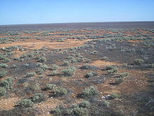
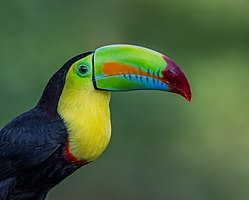
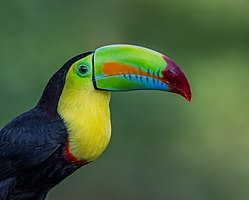
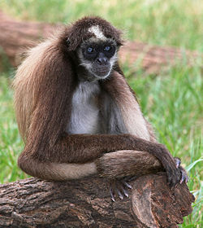
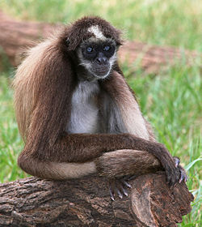
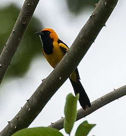
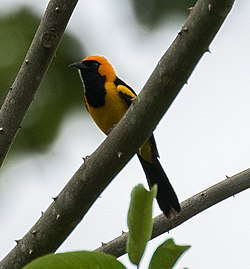

La cobertura natural de mayor representación en la serranía es el bosque seco tropical, del cual se sospecha que subsiste menos de un 1,5% de su superficie original en toda Colombia, y constituye por ende uno de los ecosistemas más amenazados y con escasa representación en áreas protegidas del país
Aun cuando bastante desconocida, se sabe que la biota del bosque seco tropical alberga cerca del 16% de las especies de flora amenazada de Colombia y posee más del 60% de la fauna con distribución restringida a la Llanura Costera del Caribe. Hasta el momento los inventarios echos a las flores que se desarrollan en la serranía han identificado 255 especies, 209 géneros y 55 familias, en donde sobresalen por su abundancia las leguminosas, de familias como la Bignoniaceae y Burseraceae. Las lianas y bejucos son comunes y abundas los de las familias Convolvulaceae, Cucurbitaceae, Menispermaceae, Passifloraceae y Smilacaceae
Estudios recientes desarrollados por Conservación Internacional para la formulación del plan de manejo de la reserva identificaron siete unidades de cobertura y uso de la tierra tales como:

- Matorral seco
- Bosque freatofítico
- Bosque caducifolio
- Bosque montano
- Bosque de crecimiento secundario
- Bosque de crecimiento secundario tardío
- Agroecosistemas

 

 

 
